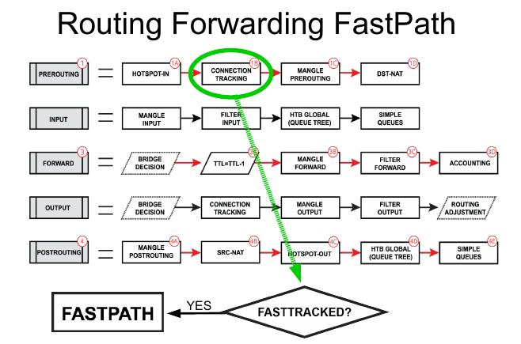

FastTrack in RouterOS
Official documentation: https://manual.mikrotik.com/docs/firewall-and-quality-of-service/connection-tracking#fasttrack
How it works

NEW connection
↓
conntrack
↓
firewall/mangle/NAT
↓
connection becomes established
↓
FastTrack rule match
↓
subsequent packets bypass slow path
Improtant
FastTrack works reliably only with the main routing table
traffic using policy routing, VRF, or routing marks should usually be excluded
defconf:
/ip firewall filter
add action=fasttrack-connection chain=forward \
comment="defconf: fasttrack" \
connection-state=established,related
add action=accept chain=forward \
comment="defconf: accept established,related, untracked" \
connection-state=established,related,untracked
add action=drop chain=forward \
comment="defconf: drop invalid" \
connection-state=invalid
The accept rule after FastTrack is mandatory because some packets still use the normal processing path.
If you use any connection marking - just add connection-mark=no-mark condition to fasttrack-connection action
/ip firewall filter
add action=fasttrack-connection chain=forward \
comment="defconf: fasttrack" \
connection-mark=no-mark \
connection-state=established,related
NOT use FastTrack
Usually exclude:
- WireGuard with policy routing
- IPsec
- VRF
- QoS / CAKE / FQ-Codel
- queue tree
- advanced mangle rules
- traffic accounting
- containers with custom routing
- multi-WAN policy routing
Recommended approach:
- exclude specific traffic first
- fasttrack only regular LAN↔WAN traffic
Best FastTrack Layouts
Low-End Devices (hAP lite, hAP ac lite, RB750)
- Keep configuration simple:
- minimal firewall
- avoid heavy mangle
- avoid queue tree
- avoid containers
- avoid unnecessary connection marks
# RoS 7.23
add action=fasttrack-connection chain=forward comment="defconf: fasttrack" \
connection-mark=no-mark connection-state=established,related
Mid-Range Devices (hAP ac², ax², ax³)
- FastTrack should only be applied to normal Internet traffic.
- Exclude:
- WireGuard traffic
- routing-mark traffic
- container networks
- QoS traffic
- Common symptoms of incorrect FastTrack usage:
- unstable WireGuard
- broken TLS sessions
- random website issues
- intermittent routing problems
# RoS 7.23
# Add LAN-WAN direction, bi-direction is automatical
# exclude mangled traffic and containers
# containers and their separate bridge must NOT belong to LAN
# any VPN must NOT belong to WAN, use separate lists
# process only "usual clear" traffic
add action=fasttrack-connection chain=forward comment="defconf: fasttrack" \
connection-mark=no-mark connection-state=established,related \
in-interface-list=LAN out-interface-list=WAN
Directonal FastTrack logic:
Request: LAN (PC) ---------------------> WAN (Internet)
in=LAN, out=WAN -> rule matched
Response: WAN (Internet) ---------------> LAN (PC)
in=WAN, out=LAN -> rule NOT matched
BUT connection is marked already as fasttracked!
High-End / Enterprise Devices (CCR2004, CCR2116, CCR2216, x86)
- FastTrack is often optional rather than required.
- In enterprise networks, priorities are usually:
- routing accuracy
- QoS
- observability
- traffic accounting
- stable failover
- VRF/MPLS functionality
- FastTrack is commonly used only for:
- guest traffic
- bulk Internet traffic
- simple office browsing